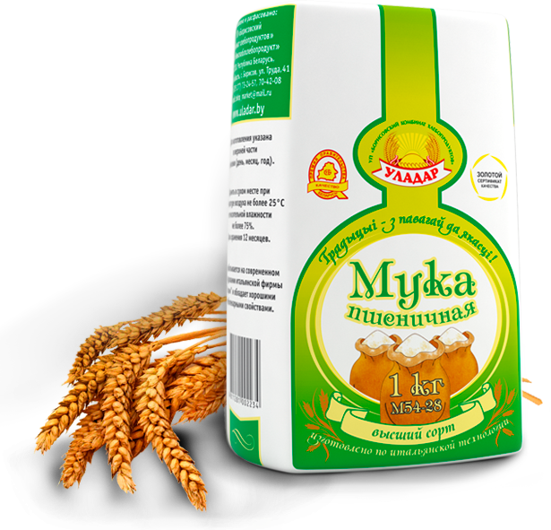

<div class="product-top">
	<div class="inner">
		<div class="product-top-title flex-row">
			<div class="flx-5 flx-x-hidden"></div>
			<div class="flx-7 flx-x-12"><h1>Мука пшеничная высший сорт</h1></div>
		</div>
		<div class="product-top-cols">
			<div class="flex-row">
				<div class="flx-5">
					<div class="product-top-img">
						
					</div>
				</div>
				<div class="flx-7">
					<div class="product-top-body">
						<div class="h3">СТБ 1666-2006</div>
						<p>В пшеничной муке высшего сорта велико, в отличие от муки более низкого сорта, содержание крахмала, практически нет жира. Поскольку она состоит только из размолотого до мелких частиц зерна, в ней немного различных витаминов. Клейковина составляет примерно 28%, частиц оболочек зерна нет. Имеет цвет белоснежный, с легко узнаваемым запахом. Таким образом, главные достоинства муки высшего сорта – это её прекрасные хлебопекарные качества.</p>
						<div class="shelf"><span>Срок годности: </span>2 года, от +15° до +25°</div>
					</div>
				</div>
			</div>
		</div><!--.product-top-cols-->
	</div><!--.inner-->
</div><!--.product-top-->